Screenshots & Evidence¶
This page contains the complete visual evidence for every stage of the DevSecOps pipeline. Each screenshot proves a specific step was completed successfully.
GitHub Repository¶
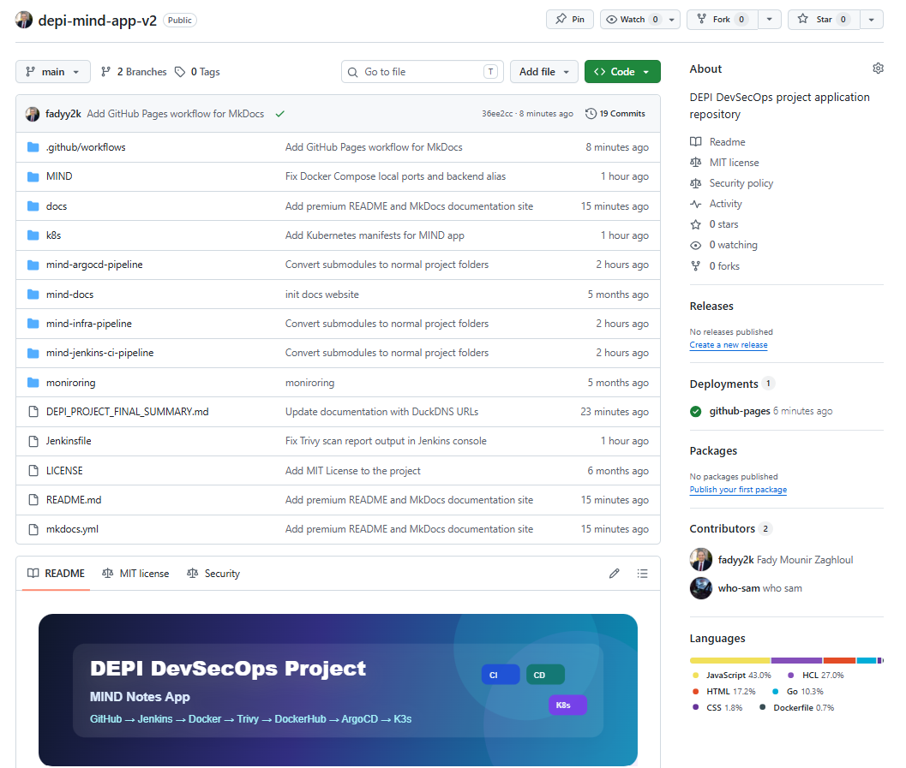
What it shows: The public GitHub repository containing all source code, Kubernetes manifests, Jenkins pipeline, MkDocs documentation source, and showcase code.
Evidence: The repository structure is visible including MIND/, k8s/, Jenkinsfile, docs/, showcase/, and .github/workflows/.
MkDocs Documentation¶
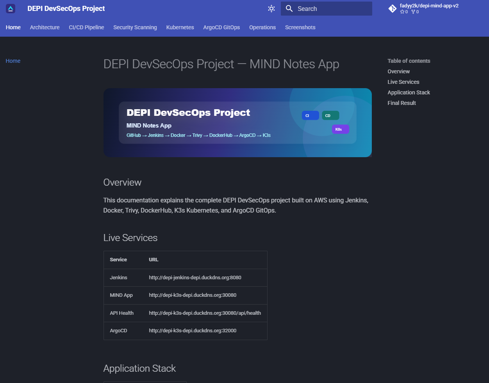
What it shows: The live MkDocs Material documentation site deployed to GitHub Pages.
Evidence: The full documentation portal is live at https://fadyy2k.github.io/depi-mind-app-v2/
Jenkins Dashboard¶
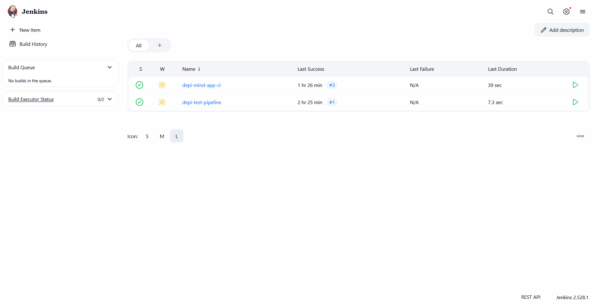
What it shows: The Jenkins CI/CD server dashboard showing the pipeline job.
Evidence: Jenkins is live and accessible at http://depi-jenkins-depi.duckdns.org:8080
Jenkins — Successful Build (Early)¶
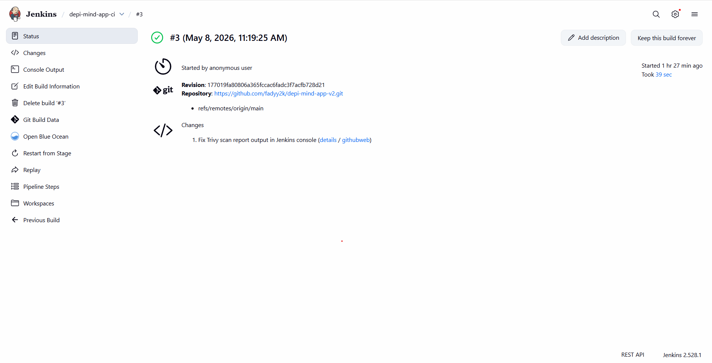
What it shows: An early successful Jenkins pipeline build.
Evidence: The pipeline was running and completing successfully from the beginning of the project.
Jenkins — Build #8 (Final with Security Tools)¶
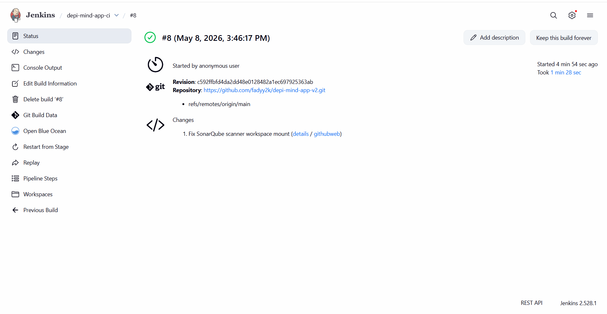
What it shows: Jenkins Build #8 — the final build that includes all stages: Gitleaks, SonarQube, Docker Build, Trivy, and DockerHub Push.
Evidence: All stages completed successfully in a single pipeline run.
Jenkins Console — Gitleaks Scan¶
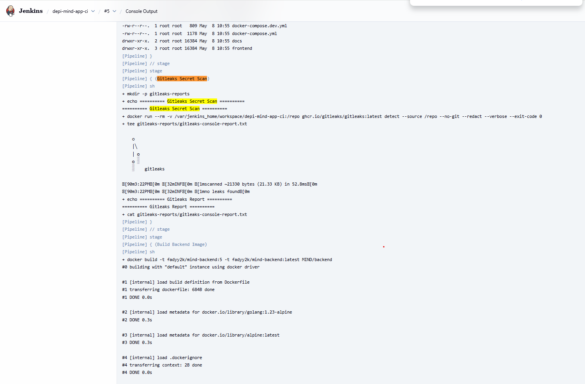
What it shows: The Jenkins console output from the Gitleaks stage showing the scan completed with no leaks detected.
Key output:
Successfully pulled gitleaks/gitleaks:latest
...
No leaks found
Evidence: Secret scanning is integrated into the pipeline and running before any build occurs.
Jenkins Console — SonarQube Scan¶
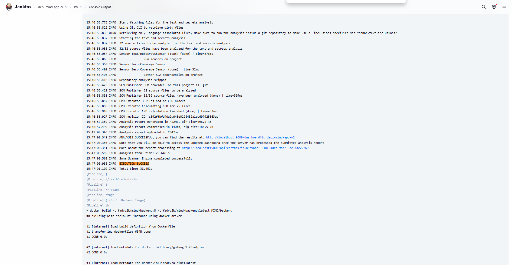
What it shows: The Jenkins console output from the SonarQube stage showing the scanner running and uploading analysis results.
Key output:
INFO: Sensor JavaXmlSensor [java]
INFO: ANALYSIS SUCCESSFUL for project depi-mind-app-v2
INFO: Note that you will be able to access the updated dashboard once you have executed...
Evidence: Code quality scanning is integrated and submitting results to the SonarQube server.
SonarQube Dashboard¶
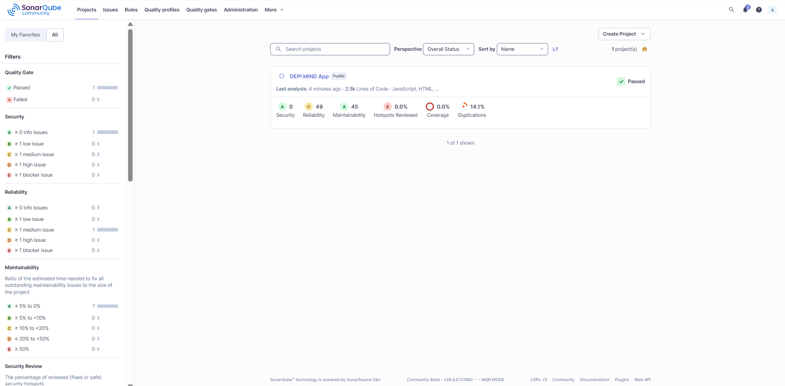
What it shows: The SonarQube project dashboard for DEPI MIND App showing the analysis results and quality gate status.
Evidence: The quality gate passed. The project is visible in SonarQube at http://depi-jenkins-depi.duckdns.org:9000
Jenkins Console — Trivy Scan¶
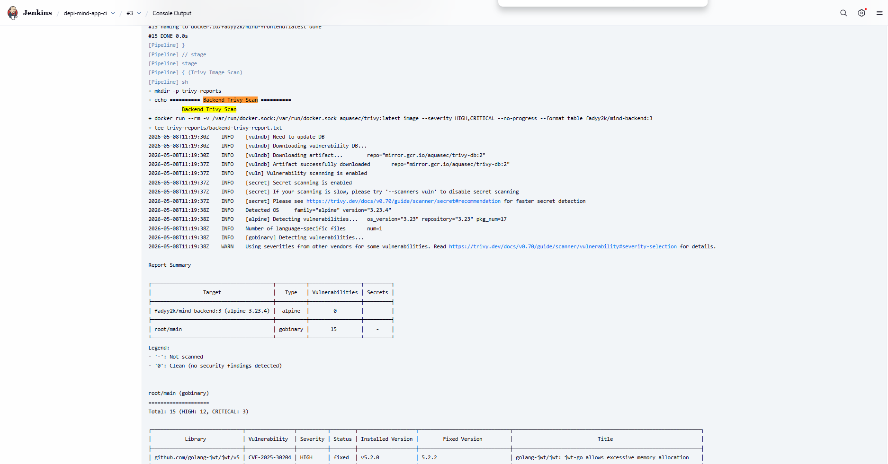
What it shows: The Jenkins console output from the Trivy image scanning stage showing vulnerability scan results for both Docker images.
Evidence: Trivy is integrated into the pipeline and scanning images before they are pushed to DockerHub.
DockerHub — Backend Image¶
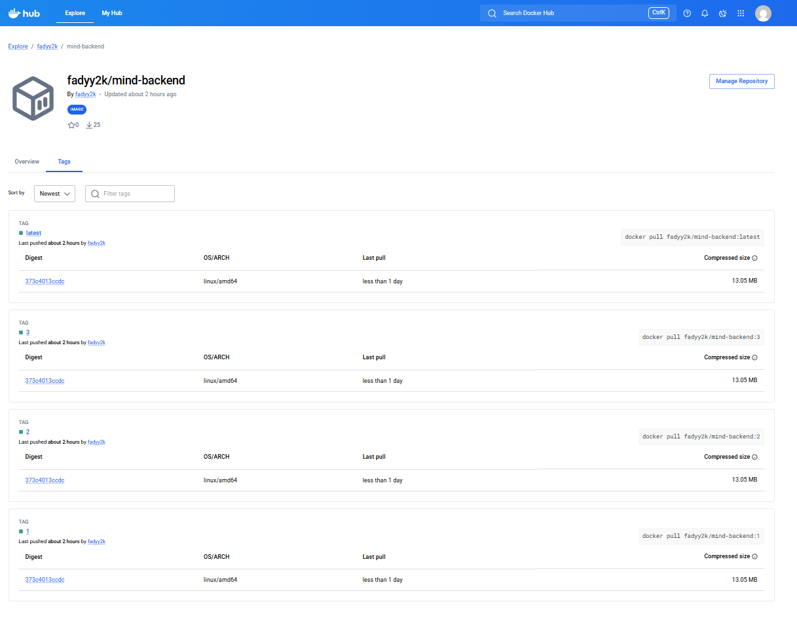
What it shows: The DockerHub repository for fadyy2k/mind-backend showing published tags including latest and build-number tags.
Evidence: Backend images are being built and pushed to DockerHub by the Jenkins pipeline.
DockerHub URL: https://hub.docker.com/r/fadyy2k/mind-backend
DockerHub — Frontend Image¶
What it shows: The DockerHub repository for fadyy2k/mind-frontend showing published tags including latest and build-number tags.
Evidence: Frontend images are being built and pushed to DockerHub by the Jenkins pipeline.
DockerHub URL: https://hub.docker.com/r/fadyy2k/mind-frontend
Kubernetes — Pods and Services¶
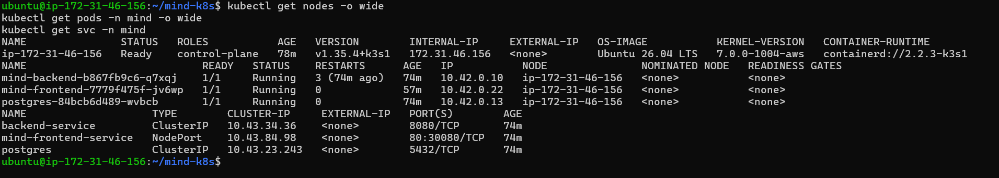
What it shows: The output of kubectl get nodes, kubectl get pods -n mind, and kubectl get svc -n mind.
Evidence:
- K3s node is Ready
- mind-frontend pod is 1/1 Running
- mind-backend pod is 1/1 Running
- postgres pod is 1/1 Running
- All services are correctly configured
MIND Notes App — Running¶
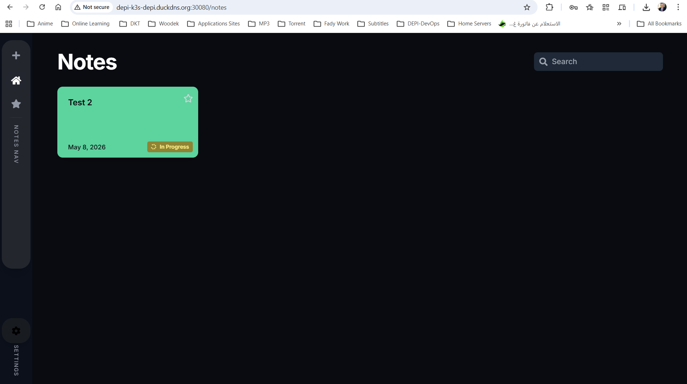
What it shows: The live MIND Notes App accessible in the browser.
Evidence: The full application is deployed and functional at http://depi-k3s-depi.duckdns.org:30080
Demo credentials: demo@example.com / demo123456
API Health Endpoint¶
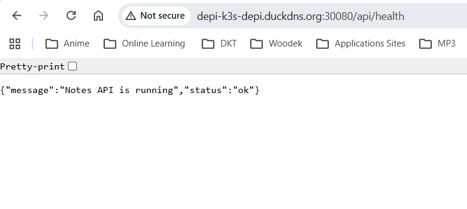
What it shows: The browser showing the API health endpoint response.
Response:
{"message":"Notes API is running","status":"ok"}
Evidence: The backend Go API is running, healthy, and reachable through the Kubernetes NodePort.
URL: http://depi-k3s-depi.duckdns.org:30080/api/health
ArgoCD — Synced and Healthy¶
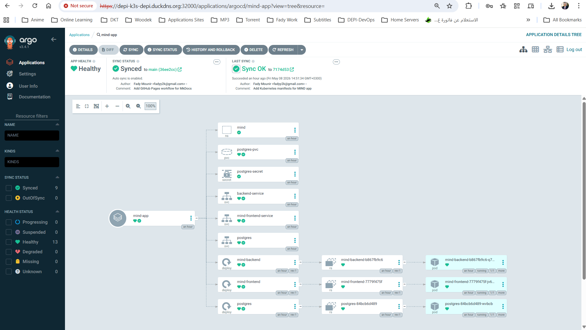
What it shows: The ArgoCD dashboard showing the mind-app application with status Synced and Healthy.
Evidence: All Kubernetes resources are deployed, running, and matching the Git-declared state.
ArgoCD URL: http://depi-k3s-depi.duckdns.org:32000
ArgoCD — Self-Healing Proof¶
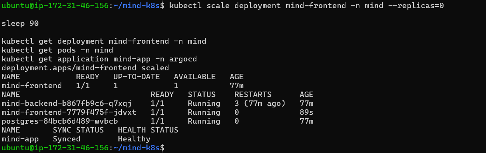
What it shows: Evidence of ArgoCD self-healing after the frontend deployment was manually scaled to zero replicas.
The test:
1. kubectl scale deployment mind-frontend -n mind --replicas=0 was run
2. The frontend pod terminated
3. ArgoCD detected drift from the desired Git state
4. ArgoCD restored the deployment to 1 replica within ~90 seconds
5. ArgoCD returned to Synced and Healthy
Evidence: GitOps self-healing is working correctly.
Grafana — Kubernetes Cluster Monitoring¶
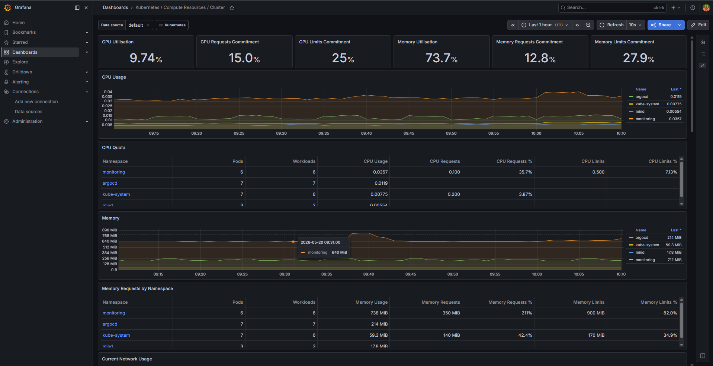
What it shows: Grafana Kubernetes cluster dashboard with CPU, memory, namespace, and pod metrics.
Evidence: Prometheus is collecting Kubernetes cluster metrics and Grafana is visualizing runtime health.
Grafana — MIND App Monitoring Dashboard¶
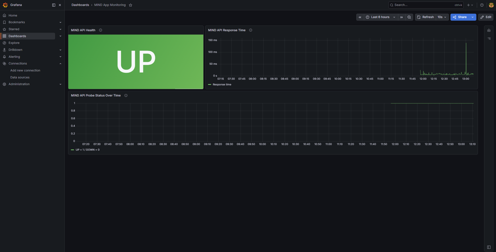
What it shows: Custom Grafana dashboard for the MIND Notes App.
Evidence: The dashboard shows MIND API health as UP, API response time, and probe status over time.
Grafana — Prometheus Probe Success¶
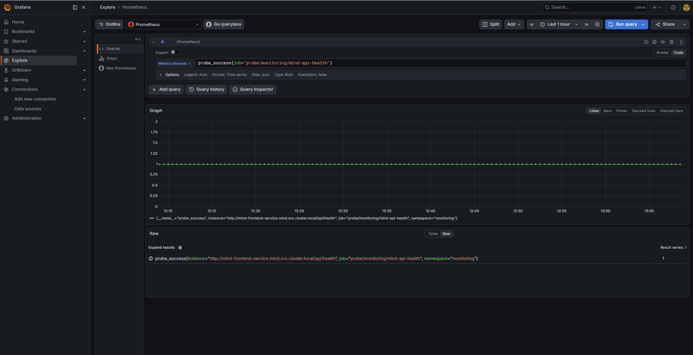
What it shows: Grafana Explore query for the MIND API health probe.
Query:
probe_success{job="probe/monitoring/mind-api-health"}
Evidence: Prometheus is scraping the Blackbox Exporter probe and the MIND API health endpoint returns probe_success = 1.
Dozzle — Kubernetes Live Logs¶
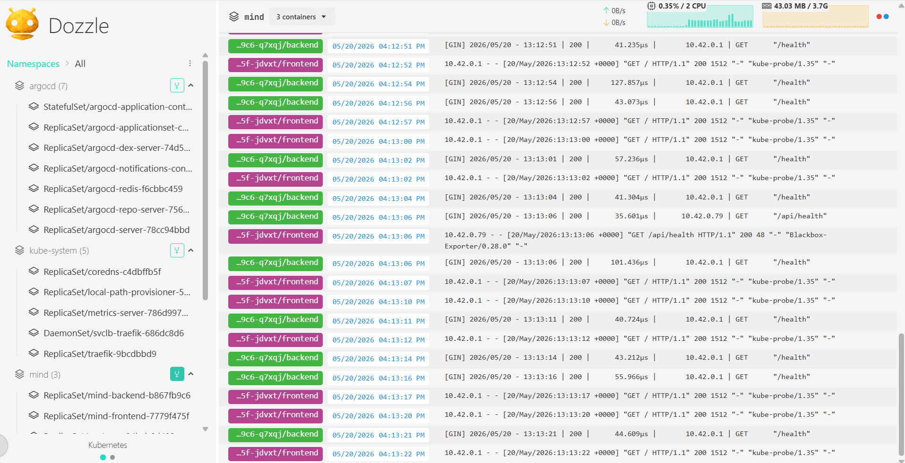
What it shows: Dozzle running in Kubernetes mode and showing live pod/container logs from the K3s cluster.
Evidence:
- Dozzle is deployed in the monitoring namespace
- Dozzle is running in k8s mode
- It can read Kubernetes pod logs through RBAC
- It provides a simple live log viewer for the running application and cluster workloads
Evidence Summary¶
| # | Screenshot | Stage | Result |
|---|---|---|---|
| 1 | github-repo.png |
Source Control | Repository visible ✓ |
| 2 | mkdocs-home.png |
Documentation | Live docs ✓ |
| 3 | jenkins-dashboard.png |
CI/CD | Jenkins running ✓ |
| 4 | jenkins-build-success.png |
CI/CD | Pipeline success ✓ |
| 5 | jenkins-build-8-success.png |
CI/CD | Full pipeline ✓ |
| 6 | jenkins-gitleaks-console.png |
Security | No leaks found ✓ |
| 7 | jenkins-sonarqube-console.png |
Security | Analysis uploaded ✓ |
| 8 | sonarqube-dashboard.png |
Security | Quality gate passed ✓ |
| 9 | jenkins-trivy-console.png |
Security | Images scanned ✓ |
| 10 | dockerhub-backend.png |
Registry | Image published ✓ |
| 11 | dockerhub-frontend.png |
Registry | Image published ✓ |
| 12 | k3s-pods.png |
Kubernetes | All pods running ✓ |
| 13 | mind-app.png |
Application | App live ✓ |
| 14 | api-health.png |
Application | API healthy ✓ |
| 15 | argocd-synced.png |
GitOps | Synced + Healthy ✓ |
| 16 | argocd-self-heal.png |
GitOps | Self-healing proven ✓ |
| 17 | grafana-kubernetes-cluster.png |
Monitoring | Kubernetes metrics visible ✓ |
| 18 | grafana-mind-app-monitoring.png |
Monitoring | MIND API dashboard UP ✓ |
| 19 | grafana-prometheus-probe-success.png |
Monitoring | API health probe success ✓ |
| 20 | dozzle-kubernetes-logs.png |
Logs | Live Kubernetes logs visible ✓ |